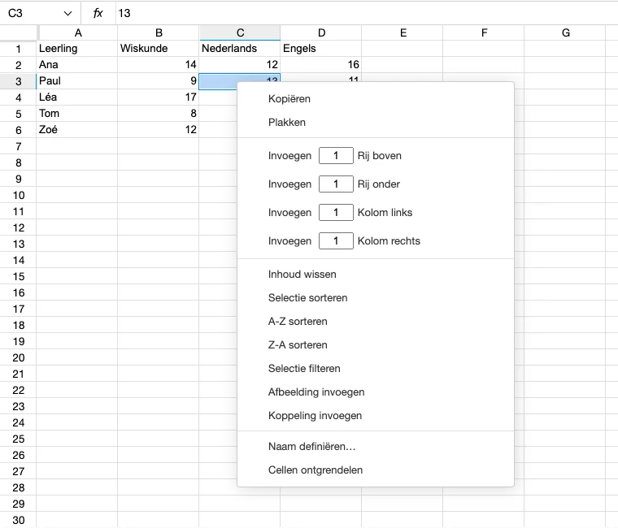

Rijen en kolommen
Grootte
| Handeling | Effect |
|---|---|
| de rechterrand van een kolomkop slepen | verandert de breedte |
| de onderrand van een rijkop slepen | verandert de hoogte |
| rechtsklikken op de kop › Kolombreedte, Rijhoogte | grootte in pixels, voor alle geselecteerde kolommen of rijen |
Invoegen, verwijderen
Rechtsklikken in een cel of op een kop: Invoegen 1 Rij boven, Invoegen 1 Rij onder, Invoegen 1 Kolom links, Invoegen 1 Kolom rechts. Het aantal wordt in het veld getypt. Rechtsklikken op een kop: Selectie verwijderen Rij, Selectie verwijderen Kolom.

Formules worden aangepast: hun verwijzingen volgen de verplaatste cellen. De grens is 10 000 rijen en 1 000 kolommen.
Verbergen
Rechtsklikken op de kop › Selectie verbergen Rij, Selectie verbergen Kolom. Verborgen cellen worden nog berekend. Om ze weer te tonen, de koppen eromheen selecteren, dan rechtsklikken › Weergeven.
Blokkeren
Geblokkeerde rijen en kolommen blijven zichtbaar bij het schuiven. De grenscel selecteren, dan of Beeld › Vastzetten:
| Opdracht | Blijven zichtbaar |
|---|---|
| Vastzetten tot huidige rij | de rijen tot en met die van de cel |
| Vastzetten tot huidige kolom | de kolommen tot en met die van de cel |
| Vastzetten tot huidige cel | beide |
| Vastzetten opheffen | niets in het bijzonder |
Om de koprij te behouden: een cel van rij 1 aanklikken, Vastzetten tot huidige rij.